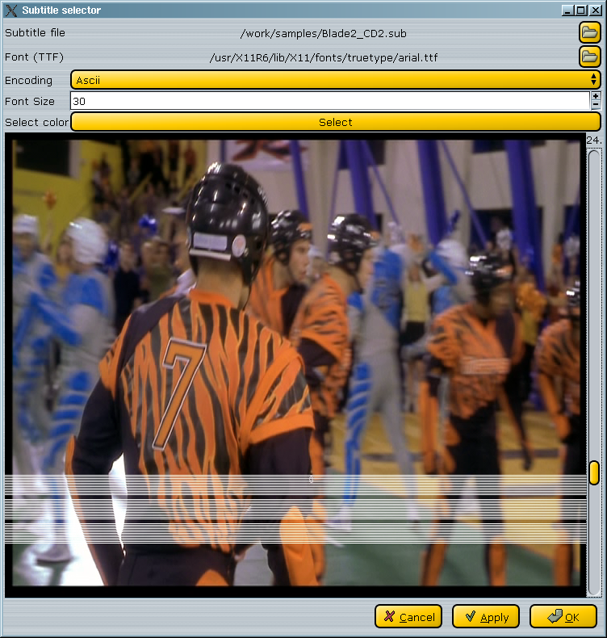
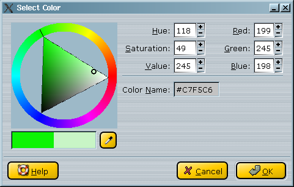

Video: Misc filters
1.Foreword
As of today, only subtitle filter in this family.
2.Misc
Subtitler
This filter is one of the more sophisticated. Its dialog window is like this :

The two first steps are to select the sub file and the TTF font. The sub file can be in either srt or sub format (autodetected).
You can select a color for the subtitles, using the color button.
You will see something like this :

Warning: It is better to select the sub color in the yellow/green color, else you will have
visible problem to read it due to the colorspace used. |
Once selected, you can place the sub position inside the image using the right slider.
Daniel Lima added a couple of new features :
- autosplit : The line breaks will be ignored in most case, and the lines will be cut
to best fit onscreen.
- Force Background : A black background will be set below the subtitles. It can be useful to overwrite previous burnt-in subs
Don't forget to select your code page / language, of course.
|